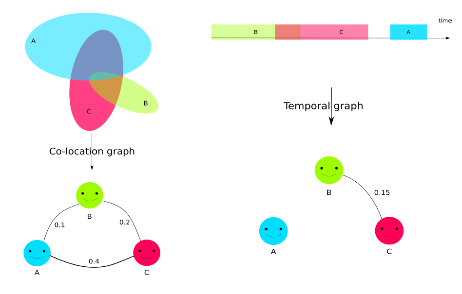
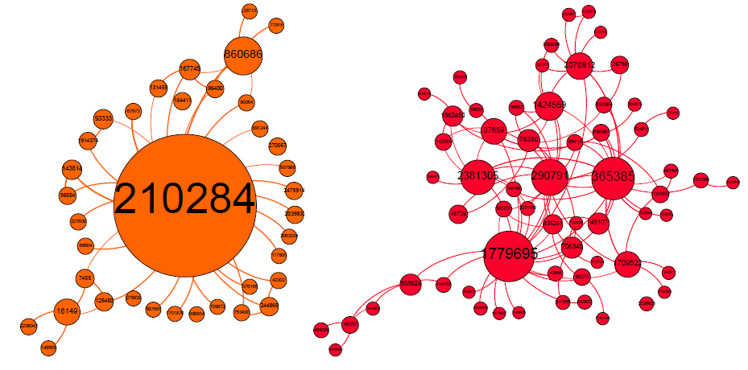
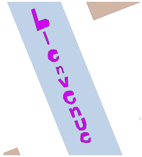
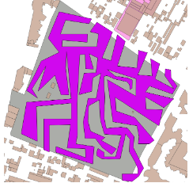

Quy Thy Truong
About
Research Interests
Education
Publications
Quy Thy
Truong
73 avenue de Paris · 94165 Saint-Mandé CEDEX · (+33)1 43 98 62 37 ·
firstname.lastname@ign.fr
PhD student in GI Science.
Member of the
MEIG
research team
Research Interests
Sujets de recherche
Quality of Volunteered Geographic Information
Qualité des données géographiques volontaires
 
Detection of Carto-Vandalism
Détection du vandalisme cartographique
 
Education
Université Paris-Est
PhD in Geographical Information Science
November 2016 - January 2020
ENSG
Engineering school
Geographical Information Science
2013 - 2016
Université Paris-Est
Master in Geographical Information Science
2015 - 2016
Publications
[ACL] Journals
[ACLN] Journals
[ACTI] Conferences
[ACTN] Conferences
[AFF] Posters